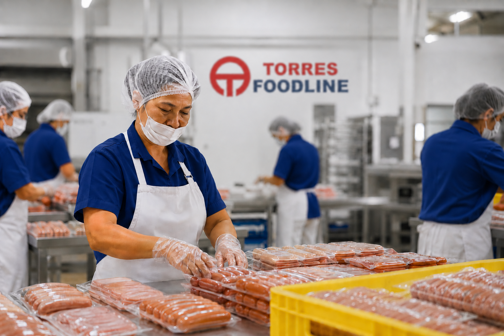

Founded in 1979 within the Yazaki Torres Realty Special Economic Zone in Calamba, Laguna, Torres Trading Co. Inc., widely known as Torres Foodline, began with a simple, singular mission: to provide high-quality food for the hardworking employees of Yazaki-Torres.
Over the decades, we have grown alongside our community. What started as a dedicated service for our workforce in 1987 expanded significantly by 1992, as we grew our network of canteens within the compound. As our operations evolved, so did our craft; we proudly introduced bakery production, bringing fresh, high-quality baked goods to our offerings.
In 2013, we officially formed Torres Foodline to streamline the management of our growing food manufacturing and service units. Today, we are proud to provide daily nourishment to over 8,300 employees of YTMI, continuing our legacy of service, consistency, and culinary care.

We specialize in providing reliable, high-quality food solutions backed by years of industry experience. Our core services include:
- Packaged Food: Convenient, high-quality meal solutions tailored for daily needs.
- Baked Goods: Freshly prepared pastries and breads baked with care.
- Events Catering: Professional catering services designed to make your occasions memorable and delicious.
- Processed food products for HORECA, DEALER AND SUPERMARKETS.
With nearly five decades of experience, Torres Foodline remains dedicated to our roots. We understand that food is more than just fuel, it is a vital part of the workday and a way to support the well-being of the community we serve. Whether through our daily canteen operations or our specialized catering services, we bring quality and care to every meal.
Retail : South Supermarket, Metro Gaisano , Wrap n Carry,
Horeca : Mr. Takoyaki, Chef Par
By partnering with us, you get:
Consistent product availability with scheduled deliveries to prevent stock shortages
Competitive wholesale pricing that helps control food costs and improve profit margins
Products ideal for breakfast meals, pasta, sandwiches, and rice bowls
Ready-to-cook products that reduce preparation time and speed up service
Uniform taste, texture, and portioning in every serving
YTMI Realty Special Economic Zone, Brgy. Makiling, Calamba, 4027 Laguna